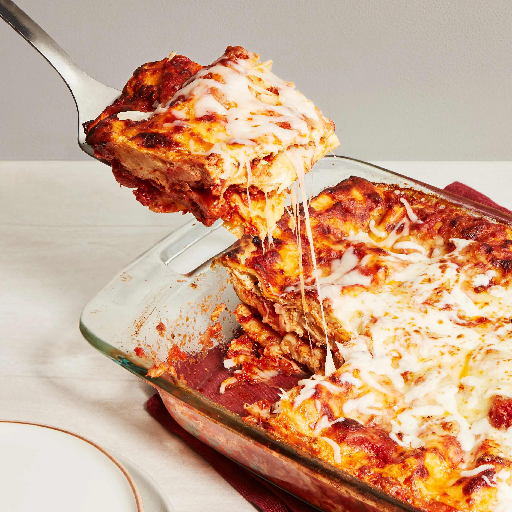

Lasagna

How to make cheesy delicious lasagna
Lasagna is a hearty and comforting dish that combines layers of rich, flavorful meat sauce, creamy cheese, and tender pasta. The essence of a great lasagna lies in its balance of textures and flavors—the savory tomato-based meat sauce contrasts beautifully with the creamy ricotta and the gooey, melted mozzarella that tops each bite. Traditionally, it’s a dish that brings together the rustic flavors of Italian cuisine, with herbs like basil, oregano, and parsley adding depth and aroma to the sauce and cheese layers. It’s a meal that can be customized with variations like using vegetables instead of meat or incorporating different cheeses for added richness.
The beauty of lasagna is its versatility and its ability to feed a crowd, making it perfect for family dinners or special gatherings. It’s prepared by carefully layering the ingredients in a baking dish, ensuring each bite offers the perfect blend of sauce, cheese, and pasta. Baked until golden and bubbly, lasagna is a dish that brings warmth and satisfaction, with its savory aroma filling the kitchen as it cooks. Once baked, it’s best to let the lasagna rest, allowing the layers to set, making it easier to serve and enjoy. Whether it’s a classic recipe or one with a modern twist, lasagna is a timeless dish that embodies comfort and indulgence.
Ingredients
For the Meat Sauce:
- 1 tablespoon olive oil
- 1 medium onion, finely chopped
- 3 cloves garlic, minced
- 1 pound ground beef or italian sausage (or a mix of both)
- 1 can (28 ounces) crushed tomatoes
- 2 tablespoons tomato paste
- 1 teaspoon dried basil
- 1 teaspoon dried oregano
- 1/2 teaspoon dried thyme
- 1/2 teaspoon sugar (optional, to balance acidity)
- Salt and pepper to taste
For the Cheese Mixture:
- 1 container (15 ounces) ricotta cheese
- 2 cups shredded mozzarella cheese (divided)
- 1/2 cup grated Parmesan cheese
- 1 large egg
- 2 tablespoons chopped fresh parsley (or 1 teaspoon dried parsley)
For the Noodles and Assembly:
- 9-12 lasagna noodles (depending on the size of your dish)
- 1/2 cup shredded mozzarella (for topping, in addition to the 2 cups above)
- 1/4 cup grated Parmesan (for topping)
Steps
- Heat olive oil in a skillet over medium heat.
- Add chopped onion and garlic, and sauté until fragrant.
- Add ground beef or sausage and cook until browned.
- Stir in crushed tomatoes, tomato paste, basil, oregano, thyme, salt, and pepper.
- Let the meat sauce simmer for 20-30 minutes.
- Bring a large pot of salted water to a boil.
- Add lasagna noodles and cook until slightly underdone.
- Drain the noodles and lay them flat to prevent sticking.
- In a bowl, mix ricotta cheese, 1 cup of shredded mozzarella, Parmesan cheese, parsley, and an egg.
- Preheat the oven to 375°F (190°C).
- Spread a thin layer of meat sauce on the bottom of a baking dish.
- Lay down a single layer of noodles, slightly overlapping them.
- Spread a layer of the ricotta cheese mixture over the noodles.
- Add a layer of meat sauce over the cheese mixture.
- Repeat the process with noodles, cheese mixture, and meat sauce until the dish is nearly full.
- Finish with a final layer of meat sauce.
- Sprinkle the remaining shredded mozzarella and Parmesan cheese on top.
- Cover the dish with foil, ensuring it doesn't touch the cheese.
- Bake the lasagna for 25 minutes.
- Remove the foil and bake for an additional 15-20 minutes until the cheese is golden and bubbly.
- Let the lasagna rest for 10-15 minutes before slicing and serving.